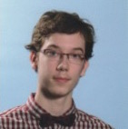
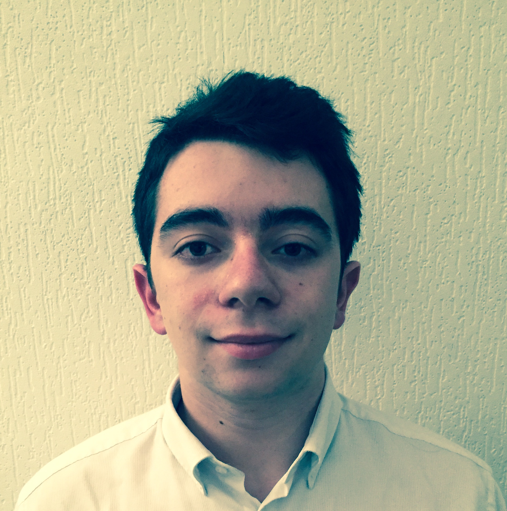

AIM² c'est avant tout un groupe de projet composé de quatre personnes
Romain Mounier (Nokiam)

Je suis Romain Mounier, j'ai 19 ans et je suis le frère jumeau de Julien Mounier. Comme lui je suis passé par une terminale S SVT option math au Lycée polyvalent Robert Schuman avant d'aller à l'EPITA. Je peux apporter au groupe une bonne dose d'imagination voire de folie (malheureusement mes idées comme utiliser un ordinateur en bois pour crafter en "hackant le jeu" sont rarement acceptées). Je possède un très bon niveau en Maths et Physique et un bon niveau d'algo et de programmation ce qui permet à mes algorithmes de bien fonctionner mais je possède une mauvaise organisation et un esprit un peu alambiqué ce qui peut nuire à la compréhension de mes algorithmes (et qui m'oblige souvent à les réorganiser à la demande justifiée d'un autre membre de mon groupe).
Florian Amsallem (Flomonster)

Je suis Florian Amsallem, j'ai 19 ans. Je viens du lycée Emmanuel Mounier à Châtenay-Malabry. J'ai passé avec succès un bac scientifique option SVT, avec spécialité informatique science du numérique. Grâce à cette spécialité et quelque projets personnels, j'ai déja eu l'occasion de travailler sur un projet en tant que chef de projet. De plus durant l'année 2015 j'ai participé au concour Prologin, qui est un concour d'algorihtmie et de programation. Cette expérience en programmation et en algorithmique sera utile pour le groupe, notamment pour la structure du projet et pour certains scripts complexes tels que la génération du monde ou le mode multi-joueurs.
Julien Mounier (Xxping)
Je m'appelle Julien Mounier, j'ai le même âge que les deux premiers. J'ai étudié au Lycée polyvalent Robert Schuman et j'y ai suivi une terminale S SVT avec spécialité Mathématiques. Je faisais du volley-ball depuis presque 10 ans, mais j'ai dû arrêter cette année car mes études me prenaient trop de temps. Je suis assidu, joyeux et toujours souriant. Je pense être assez méticuleux et j'essaie de prévoir le plus de cas de figure pour prévenir de potentiels bugs. J'apporterai également ma touche graphique à ce projet car j'ai un sens artistique suffisant pour ne pas me contenter de simples cubes blancs comme environnement.
Théo Issarni (MrColorado)

Je m'appelle Théo Issarni, j'ai 19 ans. L'année dernière j'étais en terminale scientifique option SVT spécialité mathématiques dans le lycée général René Cassin. On me fait souvent remarquer que je pense de manière différente. Dans le cas de notre projet, je pense que cela peut être intéressant, dans la mesure où nous risquons à certains moments d'être coincés, une approche différente du problème pourra alors peut être le résoudre. N'ayant pas une grande expéperience en programmation, la présence de membre plus expérimentés que moi me permettra d'améliorer mes compétances dans ce domaine.